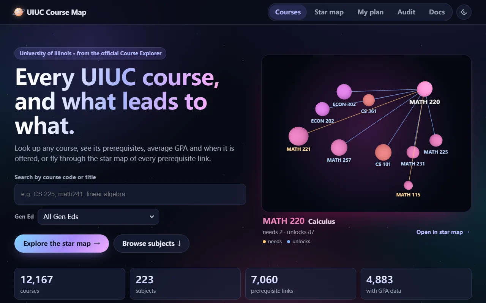
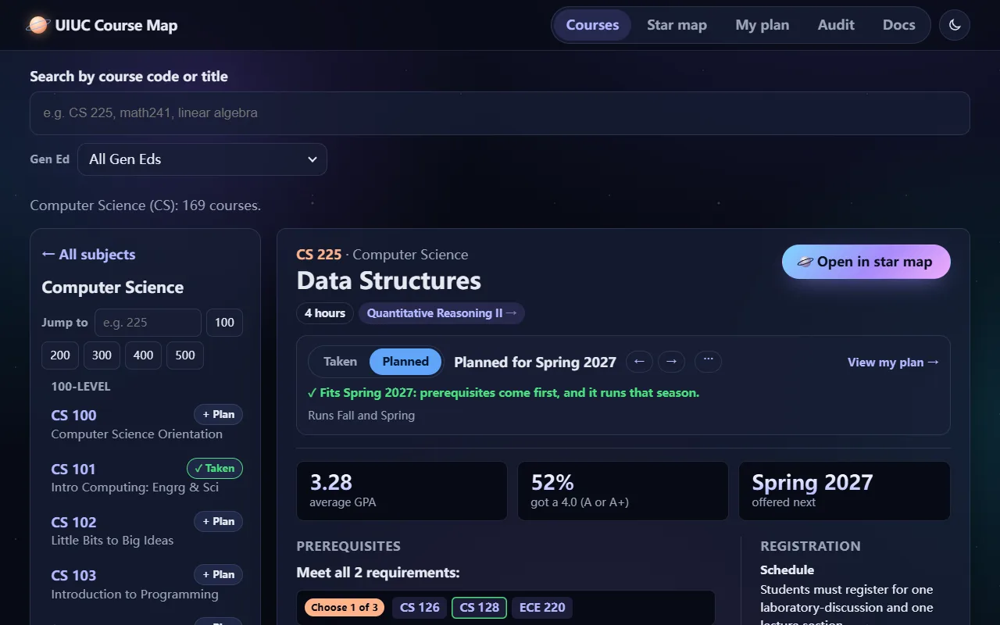
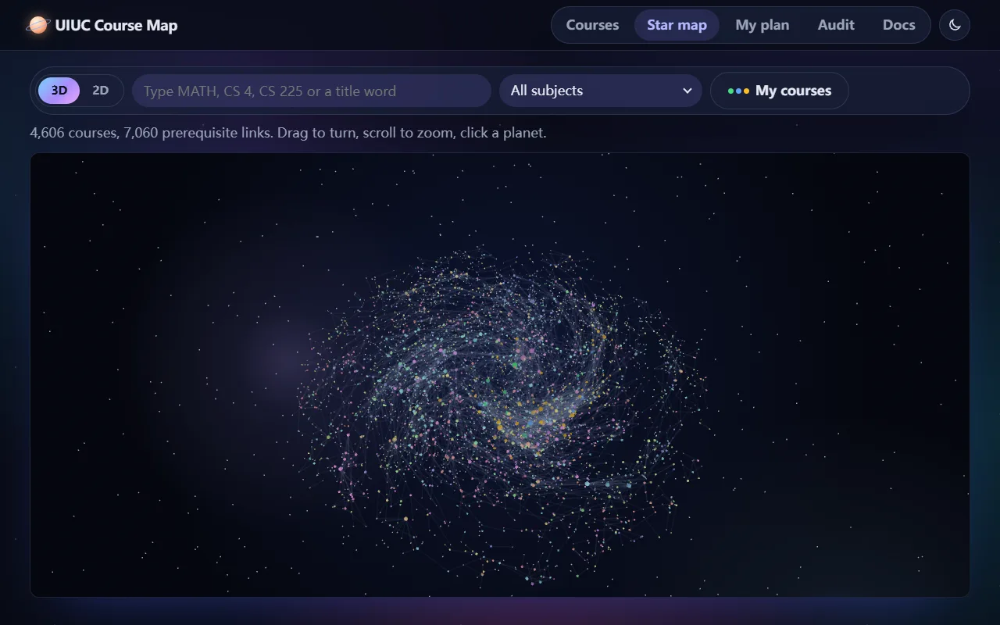
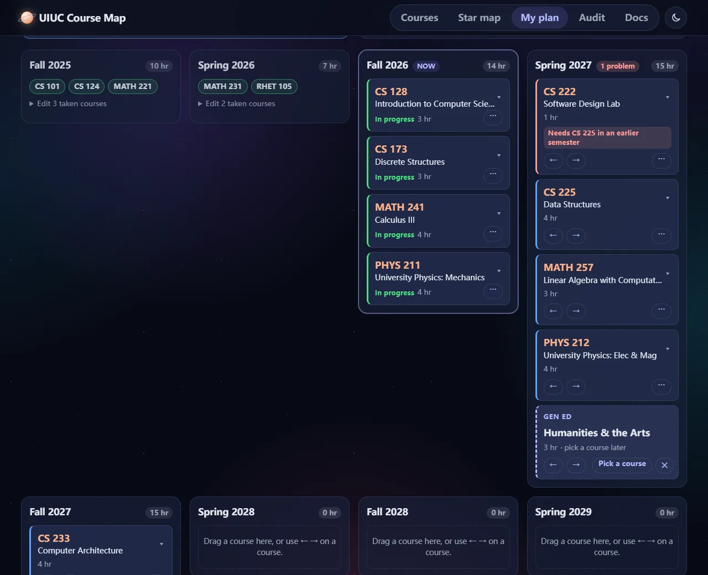
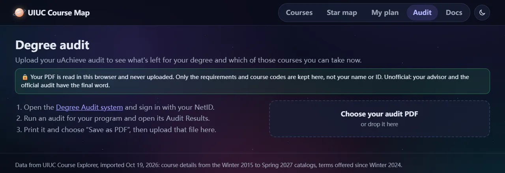

UIUC Course Map shows every UIUC course with its official description, prerequisites, average GPA and the semesters
it runs, and helps you plan the rest of your degree semester by semester. Every course comes from the official
Course Explorer feed; nothing is typed in by hand.
You can use it three ways, in any order:
Look things up: find a course and see what it needs and what it leads to.
Mark your courses: what you've taken, what you're taking now, and what you plan to take.
Plan your degree: upload your degree audit and let Auto-plan lay out the semesters, then adjust
them.
The app needs no account. Everything you mark stays in this browser (see Your data).

The home page. Search from the box, or press Explore the star map.
Find a course
Open Courses in the top bar and type in the search box. A code works with or without the space
(CS 225, cs225), and so do words from the title (linear algebra).
Or browse: pick a subject on the home page (the box above the subjects filters them, e.g. comp sci), then
use Jump to to go to a course number or a level (100, 200, …).
Cards / List switches how the courses are laid out.
Every course card has + Plan, which adds it to next semester in one press. A course you've already
marked shows its status instead: ✓ Taken, In progress, ✓ Credit or its planned semester.
Find Gen Eds
Open the Gen Ed menu under the search box and pick one or more requirements.
The list shows courses that meet all of them, highest average GPA first. Picking two (for example
Humanities and Western Cultures) finds courses that count for both at once.
Type in the search box too, to narrow the list further.
On a course page, each Gen Ed tag is a button: press it to see every course that meets the same Gen Ed.
Course pages
Open any course to see:
Average GPA, the share of students who got a 4.0, and when it is offered next or was last
offered.
Prerequisites, as requirements: each one is either Required or
Choose k of n courses, with every course a link. Below them is the official wording, exactly as UIUC
wrote it.
Description, registration notes (restrictions, fees) and the semesters it ran.
Open in star map, to see the course among everything it needs and unlocks.
The box under the title marks the course for you: + Add to plan (with the best semester picked for
you), I've taken it or I'm taking it now. See
Mark your courses.

A course page: stats, the marking box, prerequisites and description.
Star map
The star map shows every course that has a prerequisite link as a planet. Bigger planets are needed by more courses;
colors are subjects.
Drag to turn, scroll to zoom, and click a planet to open it.
Or type in the map's search box: a code (CS 225), a subject (MATH), the start of a number (CS 4) or title words. The subject menu narrows the map to some subjects.
With a course open, gold links are what it needs and blue links are what it
unlocks. ← Back to map returns to the whole map.
2D shows the same course as columns: two steps before, the course, two steps after.
My courses colors the planets you've taken, planned, or can take next.

The star map with CS 225 open: what it needs, and what it unlocks.
Mark your courses
A course can be marked in four ways:
Taken
You've finished it. Press I've taken it on its page.
In progress
You're taking it this semester. Press I'm taking it now on its page, or
Add as in progress on My plan. It counts as taken for prerequisites.
Credit before UIUC
AP, proficiency or transfer credit. This comes from your degree audit.
Planned
You plan to take it in a semester. Press + Add to plan on its page, or + Plan on
its card.
To unmark a course, press its lit Taken or Planned button again, or choose
Remove from plan in its ⋯ menu. Uploading your
degree audit marks all your past and current courses at once.
My plan
My plan lays your courses out by semester: four years of Fall and Spring from this semester, longer
if your courses need it.
Progress bar: hours earned, planned, and still to plan, out of what your degree needs (from your
audit, or 120 hours without one).
This semester shows the courses you're taking, marked In progress.
Credit before UIUC gets its own card, so no semester counts it.
Move a course: drag its card to another semester, or use ← and
→.
Click a card to see its GPA, the seasons it runs, its prerequisites and what it unlocks.
⋯ picks a semester, marks the course taken or in progress, swaps it for another course meeting
the same requirement, or removes it.
Red badges point out problems: a prerequisite that isn't in an earlier semester, a semester the
course doesn't run in, or a course that hasn't been offered lately.
Semesters say light under 12 hours and heavy over 18.
Add a course adds by code, as planned (in the semester you choose), in progress, or taken.
Ready to take next at the bottom lists courses whose prerequisites your plan already covers.

My plan (a sample plan): this semester in progress, planned courses, and a Gen Ed slot.
Auto-plan
With a degree audit uploaded, Auto-plan my degree on My plan fills
every semester from next semester on with courses for each requirement you still need, at about 15 hours a semester.
Courses you planned yourself stay; Auto-plan fills around them.
Courses it adds say auto and which requirement they are for.
Gen Ed requirements become Gen Ed slots for you to fill.
A note after it runs lists anything it couldn't fill by itself, like "any 400-level course", for you to pick.
Re-plan runs it again; Clear generated removes everything it added.
A Gen Ed slot is a dashed card that holds a place for a Gen Ed, like Humanities & the Arts, until you
pick the course. It counts as 3 hours and moves like a course.
Press Pick a course on a slot. Courses are listed best first: ones you can take that semester,
then ones that fill another open slot too, then higher GPA.
Pick one and it takes the slot's place. If it also counts for another open slot (say Humanities and Western
Cultures), that slot closes too.
Or, on a Gen Ed course's page, press Use for my … slot to put it straight into your slot.
Add a slot yourself under Add a course → Or save a place for a Gen Ed. A course picked for
a slot has Back to an open slot in its ⋯ menu, and swapping it reopens any slot
the new course doesn't cover.
Degree audit
Run your audit in uAchieve and open the Audit Results tab.
Print the page and choose Save as PDF.
On the Audit page, choose the PDF or drop it on the box.
The Audit page then shows:
Each requirement still unmet, with the courses that count for it, colored by whether you've taken or planned them,
can take them now, or need prerequisites first.
For Gen Eds, what your plan already holds for it: planned courses that count, and open slots.
Make a plan from this audit, which runs Auto-plan.
Uploading also marks your courses: finished ones as taken, this semester's as in progress, and AP, proficiency or
transfer credit as credit before UIUC, each with the hours the audit credits. Upload a newer audit any time.
The PDF is read in your browser and never uploaded anywhere. Only requirements and course codes are kept, never your
name or ID. The checklist is unofficial: your advisor and the official audit have the final word.

The Audit page, ready for a PDF.
Where the data comes from
Courses come from UIUC's official Course Explorer feed: titles, descriptions, credit hours,
prerequisites, Gen Eds and registration notes, from the oldest to
the newest catalog. When a course is in several catalogs, the newest entry
is used, and a course missing from the newest catalog says so on its page.
When it runs comes from the class schedules since
the oldest term. "Fall only" or "Spring only" means it ran in just
that season in those terms.
Average GPA comes from Wade Fagen-Ulmschneider's GPA dataset (every term since 2010), weighted by
students; the 4.0 rate is the share of A and A+. Classes of 20 or fewer students have no grade data, because the
university doesn't release it.
The data was last imported on the import date.
How prerequisites are read
Course Explorer gives each course's prerequisites as one sentence. The app splits it into requirements: each
requirement is a group of courses, and you need a number of them (Required means the one course;
Choose 1 of 3 means any one). "Recommended" courses are left out, and so are "consent of instructor" and
similar conditions that aren't courses.
This reading is a best effort, so every course page also shows the official wording, which is the source of truth.
The plan's problem badges, the star map and Auto-plan all use the requirement groups.
How Auto-plan chooses
For each requirement you still need, Auto-plan takes the easiest path:
Courses already in your plan that count for it come first.
Then courses needing the fewest extra prerequisites.
Then undergraduate courses before graduate (500-level) ones.
Then the highest average GPA.
When a requirement says "pick one of these areas", it takes the area needing the fewest new courses. It adds the
prerequisites its choices need, and leaves out courses not offered since
the oldest term.
It then fills semesters in order. A course goes in the first semester where its prerequisites come earlier and it
runs that season, starting the longest chains of prerequisites first, with Gen Ed slots last. A semester holds about
15 hours; a course that runs in only one season may stretch it to 18 rather than wait a year.
Your data
Everything you mark, your plan, your slots and your audit's requirements are saved in this browser's storage on
this device. There's no account and no server; nothing you mark is sent anywhere.
Another browser or device starts empty. To set one up, upload your audit there.
Clearing this site's data in your browser clears your plan.
From the audit, only requirements and course codes are kept, never your name or ID.
FAQ and troubleshooting
This semester shows no courses in progress.
Courses saved before the app knew "in progress" look like plain taken courses. My plan shows a note: upload your
audit again, or press Mark them in progress. You can also add each course with
Add as in progress.
My plan is gone.
The plan lives in one browser on one device. Check that you're in the same browser, and that its site data wasn't
cleared. Uploading your audit again restores your courses; planned courses have to be added again.
A course I know isn't in the app.
The app has every course in a Course Explorer catalog since
the oldest catalog. Check the code (search accepts
cs225 too). A course missing from all of those catalogs was retired before then.
A course isn't on the star map.
Only courses that need, or are needed by, another course are planets. Its course page says so.
My plan's hours don't match the catalog.
With an audit, taken courses use the hours the audit credits, which can differ from the catalog (some proficiency
credit counts as 0 hours).
The plan disagrees with my official audit.
The plan and Auto-plan are unofficial and best effort. When they disagree, the official audit and your advisor are
right.
A course is flagged "Runs Fall only".
It ran only in Fall since the oldest term. Departments do change
schedules, so check Course Explorer before relying on it.